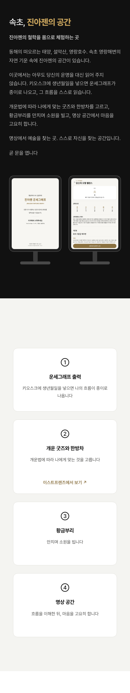
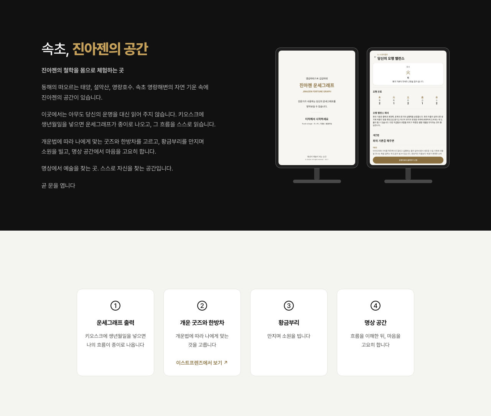
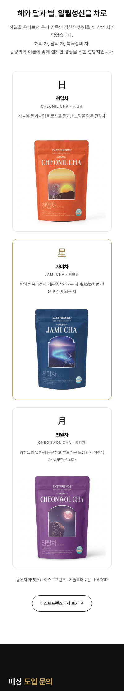
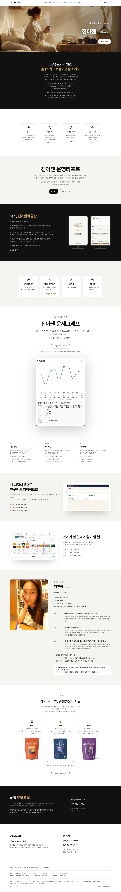

첫 화면 (스크롤 없이 보이는 자리)
https://jinazen.com/ — 사진 띠 안은 바꾸기 전과 픽셀까지 같다(두 폭 모두 차이 0줄)
공간 · 체험 카드 넷 (SITE-41)
https://jinazen.com/#space — 「스스로 자신을 찾는 곳」 · ② 카드의 이스트프렌즈 링크는 새 창


차 섹션 아래 「이스트프렌즈에서 보기 ↗」 (SITE-41)
https://jinazen.com/#teas — 새 창

페이지 전체
https://jinazen.com/ — 위에서 아래로 끝까지
